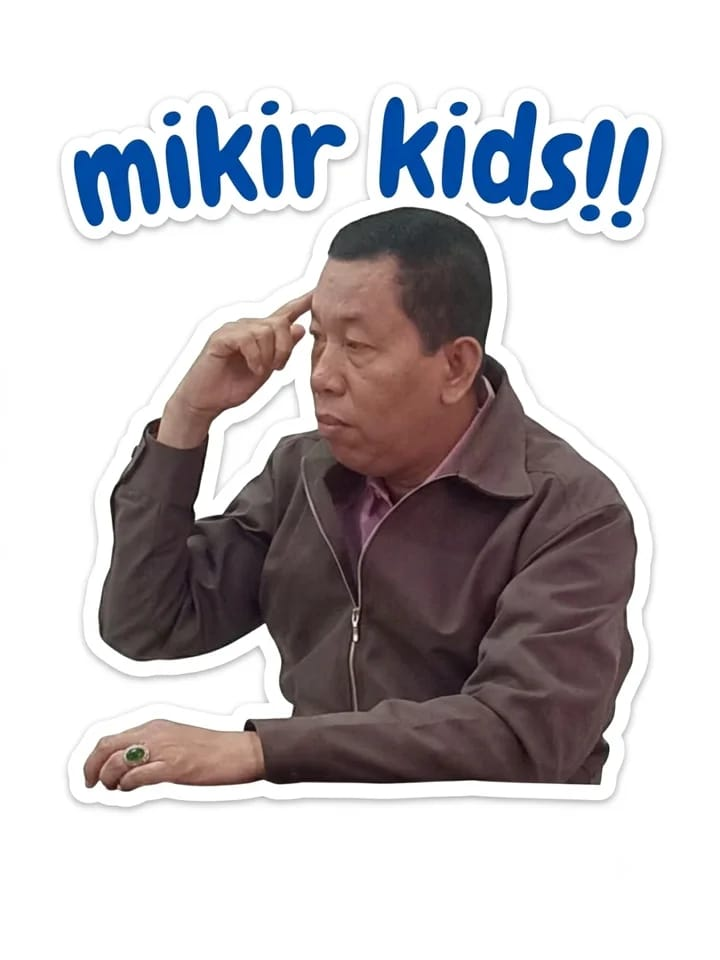

Mata kuliah Berfikir & Menulis Ilmiah
Jenis-Jenis
Karya Ilmiah
Kelompok 3Kelas AK25A
Nafis Hanuna (32425056) Prodi Akuntansi, Universitas Nahdlatul Ulama Sidoarjo
Apa itu karya ilmiah?
Tulisan yang disusun dengan kaidah dan metode ilmiah. Ada lima cirinya:
- Teoritis
- Lugas dan logis
- Efektif dan efisien
- Objektif
- Sistematis
Delapan jenis yang dibahas buku
Artikel/Jurnal Ilmiah
Karya tulis yang dirancang untuk dimuat di jurnal atau kumpulan artikel, ditulis dengan tata cara ilmiah. Isinya bersumber dari hasil penelitian, pemikiran, kajian pustaka, atau pengembangan proyek.
Fungsi jurnal
- Sarana komunikasi antarilmuwan
- Media penyebaran hasil penelitian
- Mengembangkan budaya akademik kampus
- Sumber pengetahuan baru
Komponen artikel
- Judul (disarankan maksimal 14 kata)
- Nama penulis dan abstrak
- Pendahuluan
- Bahan dan metode
- Hasil dan pembahasan
- Simpulan dan daftar pustaka
Makalah
Karya tulis ilmiah yang membahas suatu masalah berdasarkan data lapangan yang empiris dan objektif, disajikan di seminar atau kelas. Ada tiga macam:
Tugas perkuliahan
Sering disebut paper. Dibuat untuk memenuhi tugas dosen, bentuknya ditentukan dosen pengampu. Formatnya bagian awal, tengah (pendahuluan, pembahasan, penutup), dan akhir.
Tugas akhir
Syarat menyelesaikan program studi tertentu, misalnya diploma III. Untuk S1, di institusi tertentu bisa jadi pengganti skripsi.
Seminar
Ditulis untuk dibahas di pertemuan ilmiah seperti seminar atau konferensi. Ketentuannya mengikuti panitia penyelenggara.
Skripsi
Karya tulis ilmiah wajib mahasiswa untuk menyelesaikan jenjang S1. Pendapat penulis harus didukung teori orang lain serta data dan fakta empiris. Umumnya tebalnya 50 sampai 100 halaman.
Tiga jenis skripsi
Membahas topik lewat kajian kritis dan mendalam terhadap bahan pustaka yang relevan.
Mengumpulkan data empiris, lalu menganalisisnya dengan teori yang relevan untuk menarik kesimpulan.
Merancang kegiatan untuk memecahkan masalah aktual dengan menerapkan teori, konsep, dan temuan penelitian.
Tesis dan Disertasi
Tesis (S2)
Syarat gelar magister. Cakupan penelitiannya lebih luas dari skripsi dan teorinya lebih komprehensif, sehingga kesimpulan berlaku lebih umum. Penulis mengembangkan kerangka pemikiran dari teori yang sudah ada, dengan analisis data bivariat atau multivariat.
Disertasi (S3)
Syarat gelar doktor. Harus memberi sumbangan baru bagi ilmu pengetahuan. Kerangka pemikirannya dirumuskan sendiri secara orisinal, dianalisis dengan metode yang lebih kompleks, dan bisa menghasilkan teori, konsep, atau metode baru.
Apakah ada pertanyaan mengenai materi power point kami?
Silakan sampaikan pertanyaan, tanggapan, atau masukannya.

Terima kasih
Kelompok 3, kelas AK25A, mata kuliah Berfikir & Menulis Ilmiah
Ilham Dwi Kusuma dan Nafis Hanuna
Sumber: Ebook Penulisan Karya Ilmiah, Bab 5 (Jenis-Jenis Karya Ilmiah)